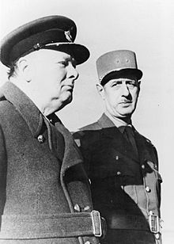
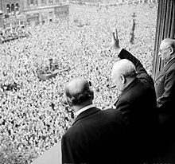

Winston Churchill
"El problema de nuestras época consiste en que los hombres no quieren ser útiles sino importantes"Ex Primer Ministro del Reino Unido
Winston Leonard Spencer Churchill (palacio de Blenheim, 30 de noviembre de 1874-Londres, 24 de enero de 1965) fue un político, estadista, historiador y escritor británico, conocido por su liderazgo del Reino Unido durante la Segunda Guerra Mundial. Es considerado uno de los grandes líderes de tiempos de guerra y fue primer ministro del Reino Unido en dos períodos (1940-45 y 1951-55). Notable estadista y orador, Churchill fue también oficial del Ejército británico, periodista (entre otros encargos, fue corresponsal de guerra en Cuba para The Daily Graphic y, durante la Segunda Guerra Anglo-Bóer, del influyente diario conservador The Morning Post), historiador, escritor y artista. Es el único primer ministro británico galardonado con el Premio Nobel de Literatura (en 1953). También fue nombrado ciudadano honorario de los Estados Unidos de América.

Nació en el seno de la familia aristocrática de los duques de Marlborough. Su padre, Lord Randolph Churchill, fue un político carismático y ministro de Hacienda del Reino Unido; su madre, Jenny Jerome, era de origen estadounidense. Siendo un joven oficial del ejército, entró en acción en la India Británica, Sudán y en la Segunda Guerra de los Bóeres. Ganó fama como corresponsal de guerra y con los libros que escribió sobre sus campañas.
En primera línea política durante 50 años, ocupó numerosos cargos políticos y de gabinete. Antes de la Primera Guerra Mundial, fue presidente de la Secretaría de Estado de Comercio, ministro de Interior y Primer Lord del Almirantazgo como parte del gobierno liberal de H. H. Asquith. Durante la guerra continuó como Primer Lord del Almirantazgo hasta la desastrosa batalla de Galípoli, que él había patrocinado y que motivó su salida del gobierno. Después sirvió un breve tiempo en el frente occidental como comandante del 6.º Batallón de los Fusileros Reales Escoceses. Regresó al gobierno como ministro de Armamento, secretario de Estado de Guerra y secretario de Estado del Aire. Tras el conflicto mundial, ocupó el cargo de ministro de Hacienda en el gobierno conservador de Stanley Baldwin entre 1924 y 1929, donde tomó la controvertida decisión de devolver la libra esterlina en 1925 al patrón oro como en la paridad anterior a la guerra, lo que muchos consideraron una presión deflacionaria sobre la economía del Reino Unido. Igual de polémicas fueron su oposición al incremento de la autonomía de la India y su resistencia a la abdicación de Eduardo VIII en 1936.
Aunque permaneció fuera de la política en la década de 1930, lideró la alerta sobre el peligro de Adolf Hitler y la campaña para el rearme. Sin embargo, apoyó el fascismo de Mussolini al menos hasta 1934.3 Al estallido de la Segunda Guerra Mundial, fue nombrado de nuevo Primer Lord del Almirantazgo y, tras la dimisión de Neville Chamberlain el 10 de mayo de 1940, se convirtió en primer ministro.  Su firme negativa a aceptar la derrota, la rendición o un acuerdo de paz ayudó a inspirar la resistencia británica, en especial durante los difíciles primeros años de la guerra, cuando el Reino Unido se quedó solo en su firme oposición y en la guerra contra la Alemania nazi. Se destacó por sus discursos y programas de radio que ayudaron a inspirar al pueblo británico, al que lideró como primer ministro hasta que fue segura la victoria de los Aliados sobre las Potencias del Eje, sin embargo, algunas de sus políticas causaron una hambruna que se cobró más de 3 millones de vidas indias.
Después de ser derrotado en las elecciones generales de 1945 frente a los laboristas de Clement Attlee, Churchill lideró la oposición. En 1951 consiguió volver a ser primer ministro, hasta su retiro en 1955. A su muerte en 1965, la reina Isabel II le concedió el honor de un funeral de Estado en el que se dio una de las mayores reuniones de jefes de Estado nunca antes vistas.5 Churchill es recordado como uno de los hombres más influyentes en la historia del Reino Unido.
En 1946, Churchill pronunció un discurso en Zúrich, donde instó a los europeos a “dejar atrás los horrores del pasado y mirar al futuro”. Afirmó que el primer paso para volver a crear la «familia europea» de “justicia, misericordia y libertad” consistía en «construir una especie de Estados Unidos de Europa». Con este alegato, Churchill fue uno de los defensores de la integración europea y propuso, como un primer paso, crear un Consejo de Europa, cuya primera reunión contó con la presencia del propio Churchill. Asimismo, planteó la idea de un «ejército europeo» y dotar de cierta fuerza a la diplomacia europea. Además, en 1959 se creó el Tribunal Europeo de Derechos Humanos, una idea que Churchill había defendido por primera vez una década antes.